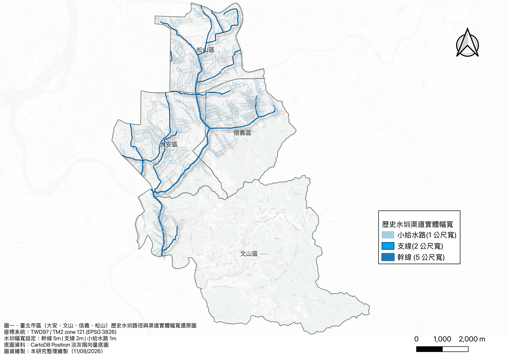

Chapter 3 — Methods and Reconstruction of Spatial Data#
“By overlaying historical maps with centroids derived from mapped flood-prone or previously inundated areas in a GIS, the concealed pattern of the former water network can be made visible again.”
3.1 Data Sources and Spatial Reconstruction#
The study focuses on four districts in central and southern Taipei—Da’an, Songshan, Xinyi, and Wenshan—and applies geometric correction and vectorization to the source data.
Mapped flood-area polygons and derived centroids (650 mm of rainfall in 24 hours)
Polygon data were obtained from Taiwan’s Water Resources Agency and the Taipei City Government. The polygons represent areas mapped as flood-prone under the specified rainfall scenario or areas previously recorded as inundated. Following geometric correction, the geometric centroid of each polygon was calculated, producing 3,022 flood-area centroid points for point-based analysis. These centroids are analytical representations of mapped areas; they are not 3,022 independently observed flood incidents.Historic-waterway vector layer
Culverted historic waterway corridors were redrawn and reconstructed from historical sources, including the Taiwan Fortress Map (臺灣堡圖) from the Japanese colonial period and the 1939 Map of the Liugong Irrigation Association District (瑠公圳水利組合區域圖). Channel widths were represented as 5 m for main canals, 2 m for branches, and 1 m for minor distribution channels.
3.2 Comparing Historic Waterways with the Modern City#
Reconstructed routes and physical widths of historic irrigation canals#

Figure 3-1. Reconstructed routes and physical channel widths of historic irrigation canals in Da’an, Wenshan, Xinyi, and Songshan districts, Taipei.
Interactive comparison of historic and modern maps#
Drag the slider to compare the 1939 Liugong Irrigation Association map with a map of present-day Taipei.

3.3 Spatial Analysis#
1. Micro-scale distance bands and standardized density#
The shortest geometric distance from each flood-area centroid to the nearest historic waterway was calculated and divided into five classes reflecting the scale of Taipei’s streets and urban blocks. To account for unequal distance-band widths, the analysis reports a band-width-normalized point count: the number of centroids divided by the width of each distance band. This exploratory measure adjusts for unequal radial widths but is not an areal density. A conventional spatial-density comparison would divide the count in each non-overlapping band by that band’s land area (for example, centroids per km²).
2. Plain-constrained Monte Carlo simulation#
Hillslopes with gradients greater than 30% were excluded because they are less susceptible to standing water and generally farther from the historic canals. Within the remaining low-lying plain, 3,022 points were placed at random in each of 1,000 simulations. The resulting expected median distances were compared with the observed median distance of 125.72 m to estimate a spatial significance value.
3. Overlay analysis#
Risk buffers of 15 m, 30 m, and 50 m around the historic waterways were dissolved and overlaid with the flood-area centroids. The analysis then compared the number and proportion of points inside and outside the buffered corridors.